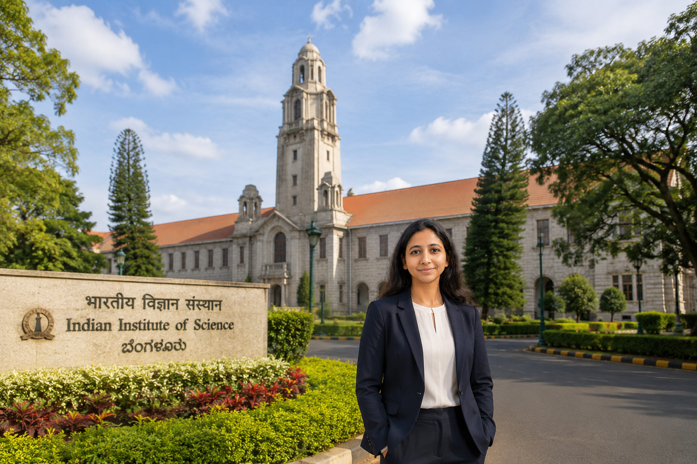

I am a Postdoctoral Research Fellow in the Department of Aerospace Engineering at the Indian Institute of Science (IISc), Bangalore. My research interests lie in wave propagation, nonlocal and strain-gradient continuum theories, computational mechanics, and mathematical modeling of advanced materials and structures. I develop analytical and numerical frameworks to study the dynamic behavior of layered, heterogeneous, and architected systems across multiple length scales. More recently, I have been exploring the integration of physics-based modeling with data-driven approaches to address challenging problems in engineering mechanics. My work sits at the intersection of applied mathematics, computational science, and engineering, with applications in aerospace, mechanical, and civil systems.
I welcome interactions with students and researchers interested in applied mathematics, computational mechanics, wave propagation, and interdisciplinary engineering research.
2023–Present
2022–Present (On Study Leave)
2020–2022
IIT (ISM) Dhanbad | 2015–2021
IIT (ISM) Dhanbad | 2013–2015
St. Xavier's College, Ranchi University | 2010–2013